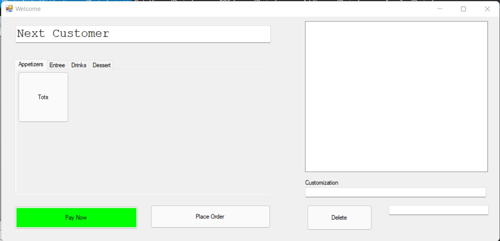

Here is the Point of Sale interface of the ordering system. All the menu items are sorted by their respective category. Once an item is added to the order, it will appear in a list with the items price on the right. A total of the order will be displayed. You will have the option for placing the order or paying the order immediatly.
1. Select the category of the item the customer would like
2. Press the button label for the item the customer would like to add to their order
The item will now appear in the order list and its cost will be added to the total
1. Select the item to remove in the order list on the right
2. Press "Delete" to remove the selected item
The item will be removed and its cost will be substracted from the total
1. Once the order is finalized, press "Place Order" to complete the order
Placing an order will create a new order, however it will not be marked as paid. a message box will show with confirmation of the order number.
1. Press the green "Pay Now" button to open up the payment dialogue
2. Once the payment dialogue opens, enter the amount tendered for payment
3. If the amount tendered is sufficient to pay for the order, the order will be placed. A message will appear with the amount of change due. A receipt will then print
4. If there is an error, a message will appear indicating there has been an error.